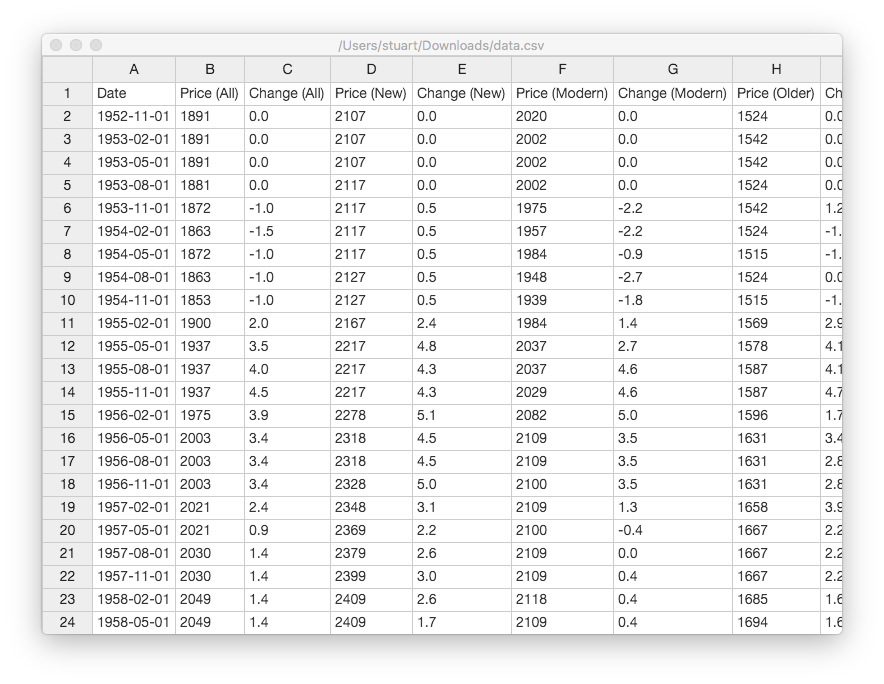
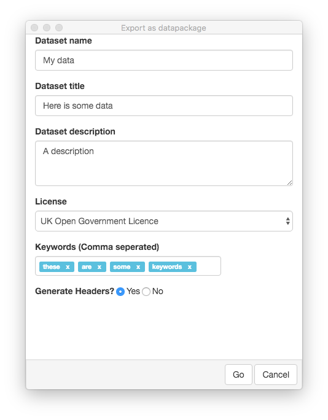

Simple interface
Comma Chameleon is a CSV editor, not a spreadsheet application. We let you add and remove rows, input data and export your file, and that's about it.
Data validation
You can also validate your CSV on the fly using CSVlint, so you can be sure your data is reuse ready before you publish it!
Export for reuse
Once you've finished creating your dataset, Comma Chameleon lets you export your data as a Data Package, ready for publication and reuse!